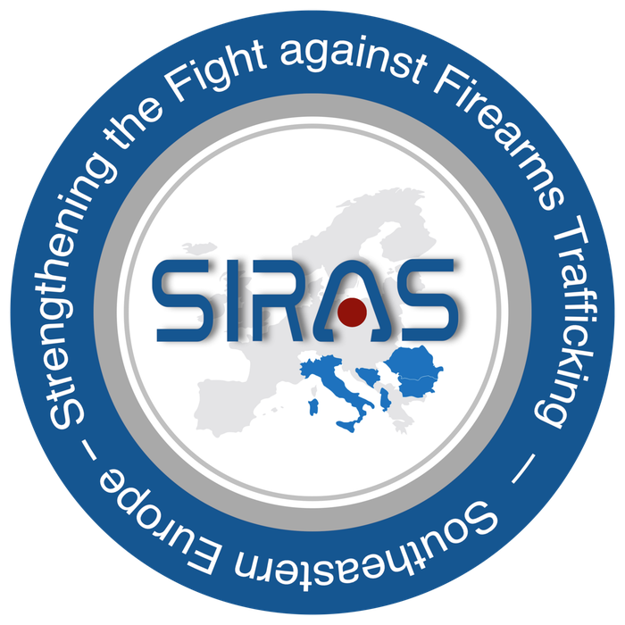

Strengthening the Fight against Firearms Trafficking in Southeastern Europe.
The Director of GDCOC-MoI, Commissioner General Ivaylo Spiridonov, opened an interdisciplinary regional seminar on the links between firearms trafficking and drug trafficking, held within the project “Strengthening the Fight against Firearms Trafficking in Southeastern Europe” (SIRAS), call HOME/2015/ISFP/AG/TDFX under the European Commission’s Internal Security Fund. Opening remarks were also delivered by Yulian Mirkov, Deputy Director of the Customs Agency, and Romulus Ungureanu, Operational Director of the Southeast European Law Enforcement Center (SELEC).

The two-day seminar opened on 12 June and took place in Sofia. The international forum was attended by representatives of law enforcement authorities, customs and international organisations from Greece, Macedonia, Serbia, Montenegro, Republika Srpska and the Federation of Bosnia and Herzegovina, Albania, Romania, Moldova, Turkey, Hungary, Italy, Germany, Spain, France, Norway, the United Kingdom, the United States, the Southeast European Law Enforcement Center (SELEC), Europol and Interpol.
The project aims to strengthen the capacity of Southeastern European law enforcement authorities in the fight against firearms trafficking by supporting innovation and networking. The project beneficiary is the General Inspectorate of the Romanian Police. Project partners are the Southeast European Law Enforcement Center, the General Directorate Combating Organised Crime (Republic of Bulgaria), the General Directorate National Police (Republic of Albania), the Ministry of Security (Republika Srpska and the Federation of Bosnia and Herzegovina) and the Central Directorate Criminal Police (Italian Republic).